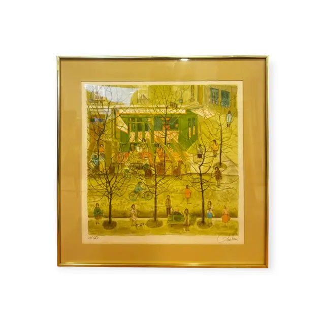
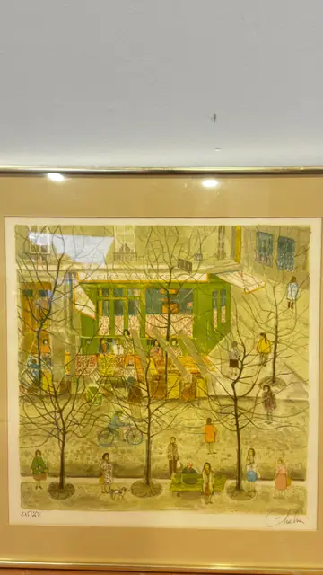
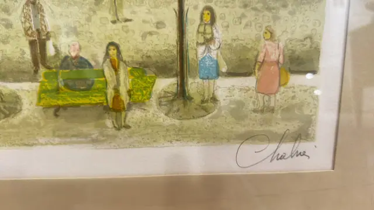
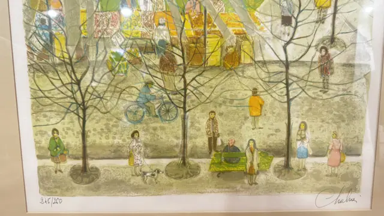

Paintings & Prints
Naive Paris Street Scene, Signed Colour Lithograph, Numbered Edition, Framed
Unknown · second half of the 20th century
Price Upon Request




About the Item
A pale, delicately drawn city street: a green-fronted café and a yellow awninged shop run across the middle distance, their windows outlined in fine pen, with blue shutters and hanging lanterns. Bare, wiry trees rise the full height of the sheet, and tiny doll-like figures in ochre, pink, blue and green walk the pavement, one on a bicycle, one with a small dog, another seated on a green bench. Everything is washed in soft grey-green and straw yellow with a chalky, almost misty surface. The sheet has wide white margins, pencil numbering at lower left and a signature at lower right. Medium: colour lithograph on paper. Signed lower right margin, in pencil. Edition: 245/250 (digits indistinct). Inscribed on the reverse or mount: pencil signature at lower right, a single cursive word beginning 'Cha' and ending in a small hook; not confidently legible; pencil edition number at lower left reading approximately '245/250' (the middle digit is indistinct); a shop sign lettered within the image begins 'CHEZ ...', the rest not legible. Condition: No visible damage; sheet and mount clean. Lamp reflections and a slight bloom on the glass.
Details
- Creator:
- Unknown
- Creation Year:
- second half of the 20th century
- Dimensions:
- Height: 23.25 in (59.05 cm)
Width: 23.25 in (59.05 cm)
outside of frame - Medium:
- colour lithograph on paper
- Edition:
- 245/250 (digits indistinct)
- Period:
- 20Th
- Condition:
- Offered in the condition shown in the photographs.
- Reference Number:
- VO-226
- Documentation:
- no certificate present
- Gallery Location:
- pencil signature at lower right, a single cursive word beginning 'Cha' and ending in a small hook; not confidently legible; pencil edition number at lower left reading approximately '245/250' (the middle digit is indistinct); a shop sign lettered within the image begins 'CHEZ ...', the rest not legible